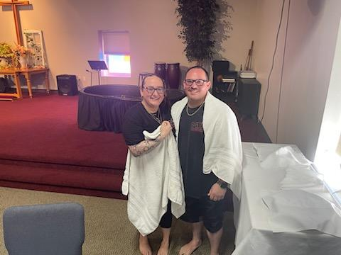
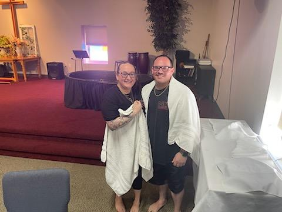

Eddie's Hobbies include
Shooting
Eddie loves to shoot guns, He is always stoked about letting people shoot all the cool guns he brings to the shooting range
Here is a picture of just some of the guns that Eddie Brings to the shooting range. A picture of him teaching my son to shoot and a picture of him teaching my daughter to shoot.


Church
Eddie got saved after he got out of the Army. His life is forever changed by the power of the gospel of Jesus Christ. Eddie is not ashamed to talk about his faith in Jesus Christ and to share how God changed his life.
Below are some pictures of Eddie at his church by a nativity and of Natasha and his baptism.
 

Guns
Eddie loves to shoot guns, He is always stoked about letting people shoot all the cool guns he brings to the shooting range.
Here is a picture of just some of the guns that Eddie Brings to the shooting range.


Eddie served in the United states Army, for more information please visit www.army.mil